| Explosivstoffe, die bei einer Explosion keine schweren Sprengstücke bilden | Gefährlicher Betriebsteil | Ungefährlicher Betriebsteil | ||||||||||||
|---|---|---|---|---|---|---|---|---|---|---|---|---|---|---|
| In Einwirkungsrichtung | ||||||||||||||
| Gebäude und Plätze mit Explosivstoffen (ausgenommen Lager) | Lager mit Explosivstoffen | sonstige Gebäude | ||||||||||||
| erdüberdeckt | mit Wall*) oder schweren Wänden und schwerer Dachausführung | mit Wall*) oder schweren Wänden und leichter Dachausführung | ohne Wall*) | erdüberdeckt | mit Wall*) oder schweren Wänden und schwerer Dachausführung | mit Wall*) oder schweren Wänden und leichter Dachausführung | ohne Wall*) | Gebäude, die der Herstellung dienen | sonstige Gebäude | |||||
| Gefährdetes Objekt (Akzeptor A) Gefährdendes Objekt (Donator D) | ||||||||||||||
| A 1 | A 2 | A 3 | A 4 | A 5 | A 6 | A 7 | A 8 | A 9 | A 10 | A 11 | ||||
| 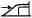 | 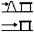 |  |  |  |  | |||||||||
| In Wirkungsrichtung | erdüberdeckt | D 1 | 2,5 | 3,0 | 3,5 | 4,0 | 0,8 | 2,5 | 3,0 | 4,0 | 4,0 | 8,0 (30 m)**) | 8,0 (30 m)**) | |
| mit Wall*) , schwere Dachausführung | D 2 | 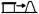 | 2,5 | 4,0 | 6,0 | 6,0 | 0,8 | 2,5 | 4,0 | 6,0 | 4,02) | 8,0 (30 m)**) | 8,0 (30 m)**) | |
| mit Wall*), leichte Dachausführung | D 3 | 2,5 | 3,0 | 3,5 | 5,0 | 0,8 | 2,5 | 3,0 | 5,0 | 4,02) | 8,0 (30 m)**) | 8,0 (30 m)**) | ||
| ohne Wall*) | D 4 | 2,5 | 4,5 | 6,0 | 8,01) | 0,8 | 2,5 | 4,0 | 8,01) | 6,0 (30 m)**) | 8,01) (30 m)**) | 8,01) (30 m)**) | ||
| Bemerkungen: | Bei Lagermengen von mehr als 1 000 kg NEM muss das Lager mit einer Erdüberschüttung versehen oder in gewachsenen Fels oder standfesten Boden eingebaut sein. |
| Bei Lagermengen bis 1 000 kg NEM genügt die Umwallung des Lagers (vgl. Nr. 2.4.1 Abs. 3). |
| Explosivstoffe, die bei einer Explosion schwere Sprengstücke bilden | Gefährlicher Betriebsteil | Ungefährlicher Betriebsteil | ||||||||||||
|---|---|---|---|---|---|---|---|---|---|---|---|---|---|---|
| In Einwirkungsrichtung | ||||||||||||||
| Gebäude und Plätze mit Explosivstoffen (ausgenommen Lager) | Lager mit Explosivstoffen | sonstige Gebäude | ||||||||||||
| erdüberdeckt | mit Wall*) oder schweren Wänden und schwerer Dachausführung | mit Wall*) oder schweren Wänden und leichter Dachausführung | ohne Wall*) | erdüberdeckt | mit Wall*) oder schweren Wänden und schwerer Dachausführung | mit Wall*) oder schweren Wänden und leichter Dachausführung | ohne Wall*) | Gebäude, die der Herstellung dienen | sonstige Gebäude | |||||
| Gefährdetes Objekt (Akzeptor A) Gefährdendes Objekt (Donator D) | ||||||||||||||
| A 1 | A 2 | A 3 | A 4 | A 5 | A 6 | A 7 | A 8 | A 9 | A 10 | A 11 | ||||
 |  |  | 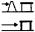 | 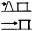 |  |  |  | |||||||
| In Wirkungsrichtung | erdüberdeckt | D 1 | 2,5 | 3,0 | 3,5 | 4,0 | 0,8 | 2,5 | 3,0 | 4,0 | 8,0 (40 m)**) | 8,0 (40 m)**) | 8,0 (150 m)**) | |
| mit Wall*) , schwere Dachausführung | D 2 |  | 2,5 | 4,0 | 6,0 | 6,0 | 0,8 | 3,0 | 4,0 | 6,01) | 8,01) (40 m)**) | 8,01) (40 m)**) | 8,0 (150 m)**) | |
| mit Wall*), leichte Dachausführung | D 3 | 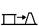 | 2,5 | 4,0 | 6,01) | 8,01) | 0,8 | 3,0 | 6,01) | 8,01) | 8,01) (40 m)**) | 8,01) (40 m)**) | 8,0 (150 m)**) | |
| ohne Wall*) | D 4 | 2,5 | 6,0 | 8,01) | 8,01) (180 m)**) | 0,8 | 4,5 | 8,01) | 8,01) (180 m)**) | 8,01) (180 m)**) | 8,01) (180 m)**) | 8,0 (275 m)**) | ||
| Bemerkungen: | Bei Lagermengen von mehr als 1 000 kg NEM muss das Lager mit einer Erdüberschüttung versehen oder in gewachsenen Fels oder standfesten Boden eingebaut sein. |
| Bei Lagermengen bis 1 000 kg NEM genügt die Umwallung des Lagers (vgl. Nr. 2.4.1 Abs. 3). |
| Explosivstoffe, die bei einer Explosion keine schweren Sprengstücke bilden | Gefährlicher Betriebsteil | Ungefährlicher Betriebsteil | ||||||||||||
|---|---|---|---|---|---|---|---|---|---|---|---|---|---|---|
| In Einwirkungsrichtung | ||||||||||||||
| Gebäude und Plätze mit Explosivstoffen (ausgenommen Lager) | Lager mit Explosivstoffen | sonstige Gebäude | ||||||||||||
| erdüberdeckt | mit Wall*) oder schweren Wänden und schwerer Dachausführung | mit Wall*) oder schweren Wänden und leichter Dachausführung | ohne Wall*) | erdüberdeckt | mit Wall*) oder schweren Wänden und schwerer Dachausführung | mit Wall*) oder schweren Wänden und leichter Dachausführung | ohne Wall*) | Gebäude, die der Herstellung dienen | sonstige Gebäude | |||||
| Gefährdetes Objekt (Akzeptor A) Gefährdendes Objekt (Donator D) | ||||||||||||||
| A 1 | A 2 | A 3 | A 4 | A 5 | A 6 | A 7 | A 8 | A 9 | A 10 | A 11 | ||||
| 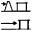 | ||||||||||||||
| In Wirkungsrichtung | erdüberdeckt | D 1 | (-)**) 25 m1) | (-)**) 25 m1) | (-)**) 25 m1) | (-)**) 25 m1) | (-)**) 25 m1) | (-)**) 25 m1) | (-)**) 25 m1) | (-)**) 25 m1) | 25 m | 40 m | 60 m | |
| mit Wall*) , schwere Dachausführung | D 2 | 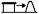 | (-)**) 25 m1) | 15 m 25 m1) | 15 m 25 m1) | 15 m 25 m1) | (-)**) 25 m1) | 10 m 25 m1) | 15 m 25 m1) | 15 m 25 m1) | 25 m | 40 m | 60 m | |
| mit Wall*), leichte Dachausführung | D 3 | 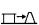 | (-)**) 25 m1) | 25 m | 60 m | 75 m | (-)**) 25 m1) | 10 m 25 m1) | 60 m | 75 m | 75 m | 75 m | 90 m | |
| ohne Wall*) | D 4 | (-)**) 25 m1) | 25 m | 75 m | 90 m | (-)**) 25 m1) | 25 m | 75 m | 90 m | 90 m | 90 m | 90 m | ||
| Explosivstoffe, die bei einer Explosion schwere Sprengstücke bilden | Gefährlicher Betriebsteil | Ungefährlicher Betriebsteil | ||||||||||||
|---|---|---|---|---|---|---|---|---|---|---|---|---|---|---|
| In Einwirkungsrichtung | ||||||||||||||
| Gebäude und Plätze mit Explosivstoffen (ausgenommen Lager) | Lager mit Explosivstoffen | sonstige Gebäude | ||||||||||||
| erdüberdeckt | mit Wall*) oder schweren Wänden und schwerer Dachausführung | mit Wall*) oder schweren Wänden und leichter Dachausführung | ohne Wall*) | erdüberdeckt | mit Wall*) oder schweren Wänden und schwerer Dachausführung | mit Wall*) oder schweren Wänden und leichter Dachausführung | ohne Wall*) | Gebäude, die der Herstellung dienen | sonstige Gebäude | |||||
| Gefährdetes Objekt (Akzeptor A) Gefährdendes Objekt (Donator D) | ||||||||||||||
| A 1 | A 2 | A 3 | A 4 | A 5 | A 6 | A 7 | A 8 | A 9 | A 10 | A 11 | ||||
 |  |  |  |  |  |  |  | |||||||
| In Wirkungsrichtung | erdüberdeckt | D 1 |  | (-)**) 25 m1) | (-)**) 25 m1) | (-)**) 25 m1) | (-)**) 25 m1) | (-)**) 25 m1) | (-)**) 25 m1) | (-)**) 25 m1) | (-)**) 25 m1) | 40 m | 60 m | 75 m |
| mit Wall*) , schwere Dachausführung | D 2 | (-)**) 25 m1) | 15 m 25 m1) | 40 m | 40 m | (-)**) 25 m1) | 10 m 25 m1) | 25 m | 25 m | 60 m | 75 m | 100 m | ||
| mit Wall*), leichte Dachausführung | D 3 |  | (-)**) 25 m1) | 25 m | 100 m | 135 m | (-)**) 25 m1) | 10 m 25 m1) | 100 m | 135 m | 135 m | 135 m | 135 m | |
| ohne Wall*) | D 4 |  | (-)**) 25 m1) | 25 m | 135 m | 135 m | (-)**) 25 m1) | 25 m | 135 m | 135 m | 135 m | 135 m | 135 m | |
| Gefährlicher Betriebsteil | Ungefährlicher Betriebsteil | |||||||||||||
|---|---|---|---|---|---|---|---|---|---|---|---|---|---|---|
| In Einwirkungsrichtung | ||||||||||||||
| Gebäude und Plätze mit Explosivstoffen (ausgenommen Lager) | Lager mit Explosivstoffen | sonstige Gebäude | ||||||||||||
| erdüberdeckt | öffnungslose Brandwand | Wand Feuerwider- standsklasse F 30 mit Wall*) | Wand Feuerwider- standsklasse F 30 ohne Wall*) oder Ausblaseseite mit oder ohne Wall*) | erdüberdeckt | öffnungslose Brandwand | Wand Feuerwider- standsklasse F 30 mit Wall*) | Wand Feuerwider- standsklasse F 30 ohne Wall*) oder Ausblaseseite mit oder ohne Wall*) | Gebäude, die der Herstellung dienen | sonstige Gebäude | |||||
| Gefährdetes Objekt (Akzeptor A) Gefährdendes Objekt (Donator D) | ||||||||||||||
| A 1 | A 2 | A 3 | A 4 | A 5 | A 6 | A 7 | A 8 | A 9 | A 10 | A 11 | ||||
| 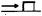 | 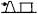 | 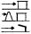 | 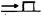 | 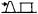 | 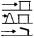 | |||||||||
| In Wirkungsrichtung | erdüberdeckt | D 1 | 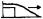 | (-) | (10 m) | 1,0 (10 m) | 1,25 (15 m) | (-) | (-) | (-) | 1,25 (15 m) | 1,4 (15 m) | 1,4 (40 m) | 1,4 (60 m) |
| öffnungslose Brandwand | D 2 | (10 m) | 1,0 (10 m) | 1,25 (15 m) | 1,4 (15 m) | (-) | (-) | 1,25 (10 m) | 1,4 (15 m) | 1,7 (15 m) | 1,7 (40 m) | 1,7 (60 m) | ||
| Wand Feuerwiderstandsklasse F 30 mit Wall*) | D 3 | 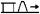 | 1,0 (10 m) | 1,25 (15 m) | 1,4 (20 m) | 1,7 (25 m) | (-) | (-) | 1,4 (15 m) | 1,4 (20 m) | 2,5 (30 m) | 4,3 (40 m) | 4,3 (40 m) | |
| Wand Feuerwiderstandsklasse F 30 ohne Wall*) oder ungeschützt bzw. Ausblaseseite, aber mit Wall*) | D 4 | 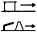 | 1,4 (15 m) | 1,4 (15 m) | 1,7 (20 m) | 2,0 (25 m) | (-) | 1,25 (10 m) | 1,4 (20 m) | 1,7 (20 m) | 3,2 (40 m) | 4,3 (60 m) | 4,3 (60 m) | |
| ungeschützt bzw. Ausblaseseite ohne Wall*) | D 5 | 1,4 (15 m) | 1,7 (20 m) | 2,0 (25 m) | 3,21) (40 m) | (-) | 1,4 (20 m) | 1,4 (25 m) | 3,21) (40 m) | 4,31) (60 m) | 4,31) (60 m) | 6,4 (60 m) | ||
| Bemerkungen: | a) | Das Dach muss der gleichen Feuerwiderstandsklasse entsprechen wie die Wände. Dies gilt nicht für Gebäude mit Ausblaseseite, wenn das Dach als zusätzliche Entlastungsfläche dient. |
| b) | Für Donatoren, in denen nach Art der Lagerbedingungen bei einer Entzündung der Explosivstoffe mit einer Explosion zu rechnen ist, sind die Abstände der Tabelle 1 einzuhalten. | |
| c) | Die Tabelle gilt für Mengen größer 10 kg; für kleinere Mengen ist der Abstand nach der Beziehung 0,1 × Menge [kg] × Mindestabstand [m] zu rechnen. |
| Lagergruppe | Gefährdetes Objekt (Akzeptor A) Gefährdendes Objekt (Donator D) | Lager mit Explosivstoffen | Schutzbedürftige Betriebsgebäude und -anlagen1) | |||
|---|---|---|---|---|---|---|
| In Einwirkungsrichtung ungeschützt | In Einwirkungsrichtung erdüberdeckt | |||||
| A 1 | A 2 | A 3 | ||||
| 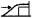 | ||||||
| 1.1 | D 1 | In Wirkungsrichtung ungeschützt |  | 8,02) 3) (180 m)*) | 0,8 | 8,03) (180 m)*) |
| D 2 | In Wirkungsrichtung erdüberdeckt | 4,0 | 0,8 | 4,04) | ||
| 1.2 | D 1 | In Wirkungsrichtung ungeschützt | (90 m)4) *) | (25 m)*) | (90 m)4)*) | |
| D 2 | In Wirkungsrichtung erdüberdeckt | (-)5) **) | (-)5)**) | (25 m)*) | ||
| 1.3 | D 1 | In Wirkungsrichtung ungeschützt bzw. Ausblaseseite | 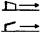 | 3,22) (40 m)*) | (-)5)**) | 4,32) (60 m)*) |
| D 2 | In Wirkungsrichtung ungeschützt, Wand jedoch mindestens Feuerwiderstandsklasse F 30 | 1,7 (20 m)*) | (-)5)**) | 3,2 (40 m)*) | ||
| D 3 | In Wirkungsrichtung erdüberdeckt | 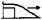 | 25 m | (-)**) | 1,4 (25 m)*) | |
| 1.4 | Abstand der Gebäude untereinander mindestens 10 m. Ist durch bauliche Maßnahmen, mindestens durch eine Brandwand, gewährleistet, dass keine gefährliche Wirkung auf benachbarte Gebäude auftritt, kann der Abstand verringert werden oder er kann entfallen. | |||||